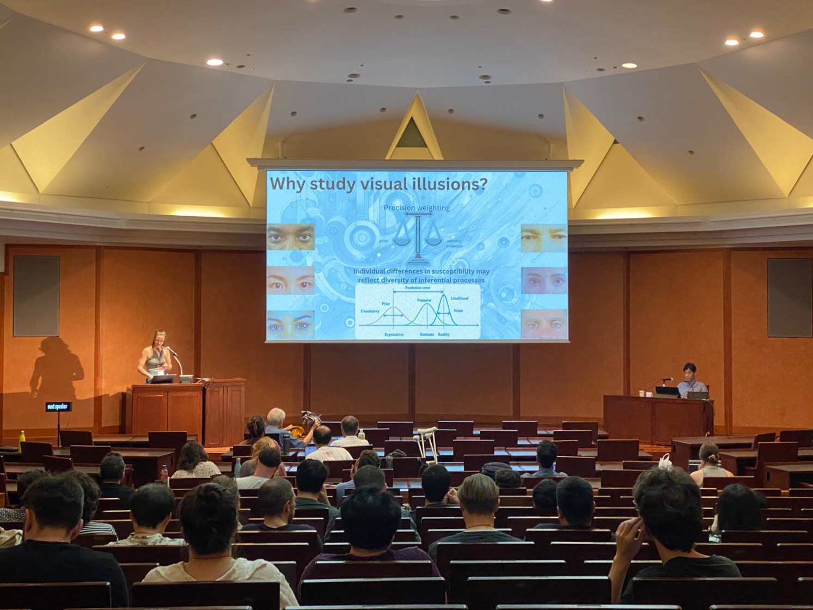
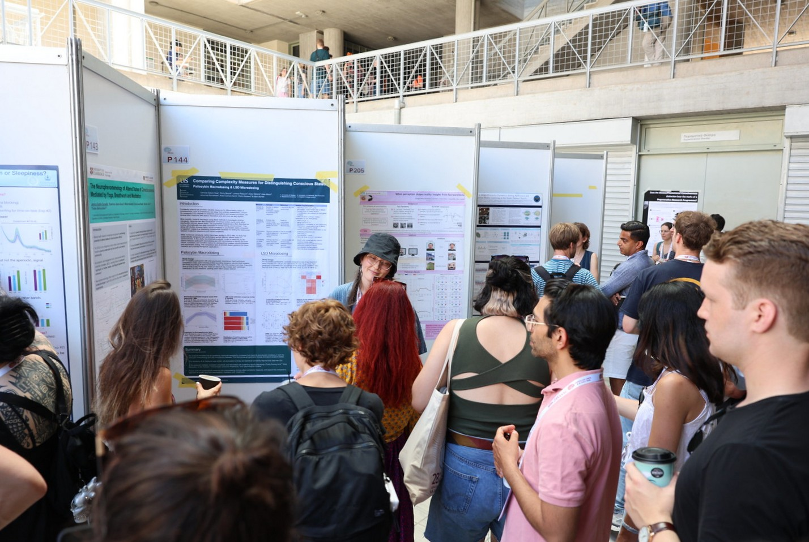

Talks, Posters & Workshops
Talks
-
“Visual Illusions: A Window into Perceptual Diversity”
Presented behavioural and neural work on illusion susceptibility through the lens of predictive processing. Received a travel grant from the Guarantors of Brain. -
 “Dying Brain Dynamics: Challenges in Measurement and Interpretation”
“Dying Brain Dynamics: Challenges in Measurement and Interpretation”
Invited talk presenting collaborative work analysing neural dynamics during the dying process and links with near-death experience phenomenology. -
“Comparing Complexity Measures for Distinguishing States of Consciousness: Psilocybin Macrodosing and LSD Microdosing”
Presented comparative work on complexity measures applied to altered-state EEG datasets. -
 Mediterranean Society for Consciousness Science (MESEC)
Mediterranean Society for Consciousness Science (MESEC)
Interdisciplinary discussions on non-ordinary states of consciousness; group work with Thomas Metzinger on Minimal Phenomenal Experience; contributed to a published essay review. -
Statistical Physics of Cognition Workshop
Two-day workshop on statistical physics approaches to neural activity; explored network science and information-theoretic methods.